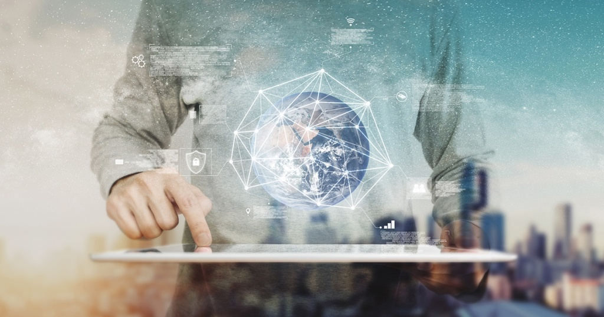

Pengertian Teknologi Informasi
Jan 1, 2021Views : 12,232,246
Secara umum pengertian teknologi Informasi adalah suatu studi perancangan, implementasi, pengembangan, dukungan atau manajemen sistem informasi berbasis komputer, khususnya perangkat keras (hardware) dan perangkat lunak (software).
Read More
Fungsi Teknologi Informasi
Jan 1, 2021Views : 9,323,338,Tentunya adanya teknologi informasi memiliki fungsi penting. Tidak mungkin bahwa dengan adanya teknologi informasi tidak berpengaruh penting dalam kehidupan. Setidaknya terdapat enam fungsi teknologi informasi yaitu .....
Read more

Tujuan Teknologi Informasi
Jan 1, 2021Views : 10,308,202Tujuan Teknologi Informasi adalah untuk memecahkan suatu masalah, membuka kreativitas, meningkatkan efektivitas dan efisiensi dalam melakukan pekerjaan. Jadi dapat dikatakan karena.....
Read More